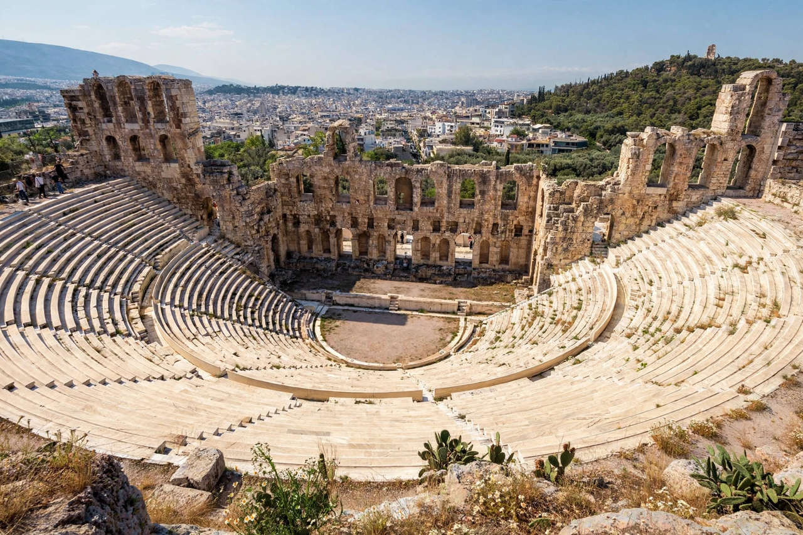

| Theatre of Dionysus Eleuthereus | |
|---|---|
 The theatre today, beneath the Acropolis of Athens | |
| Location | South slope of the Acropolis, Athens, Greece |
| Type | Greek theatre and sanctuary |
| Built | 6th century BC (wooden); stone rebuilding c. 330 BC |
| Capacity | c. 17,000 (stone theatre) |
| Dedicated to | Dionysus Eleuthereus |
The Theatre of Dionysus Eleuthereus is a major theatre in Athens, considered the birthplace of Greek tragedy and of European theatre. Built into the southern slope of the Acropolis, it was the venue for the dramatic competitions of the City Dionysia festival, where the plays of Aeschylus, Sophocles, Euripides, Aristophanes, and Menander were first performed.
The sanctuary of Dionysus Eleuthereus was established in the 6th century BC; according to tradition the cult image was brought from Eleutherae. Around 534 BC the tyrant Pisistratus is associated with the reorganization of the Dionysia and the performances of Thespis, conventionally the first actor. Early performances took place before wooden benches (ikria) around a circular dancing floor, the orchestra. After a collapse of the wooden seating in the early 5th century BC, the audience was moved to the hillside.
The surviving stone theatre is largely the product of a rebuilding in the Lycurgan period, around 330 BC, when the auditorium (theatron), orchestra, and stage building (skene) were constructed in stone. The front row consisted of 67 marble thrones for priests and officials, the central one reserved for the priest of Dionysus. In the Roman period the theatre was remodeled — under Nero the orchestra was paved and later converted for gladiatorial and aquatic displays, with a marble barrier added in the 3rd century AD.
At the Great Dionysia each spring, three tragedians each presented three tragedies and a satyr play, competing for prizes judged by lot-chosen citizens, while comic poets competed in a separate contest. The dramatic forms grew out of choral song, including the dithyramb, a hymn to Dionysus performed by a chorus of fifty. The theatre's acoustics and sightlines, exploiting the natural slope, became the model for Greek theatres across the Mediterranean world.
The ruins were excavated from the 19th century onward, beginning with work by the Greek Archaeological Society in 1838 and systematic excavation by Wilhelm Dörpfeld in the 1880s–90s, whose analysis of the stage building long shaped scholarly debate about the development of the Greek skene.